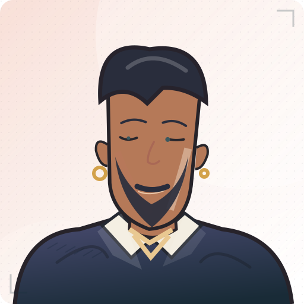
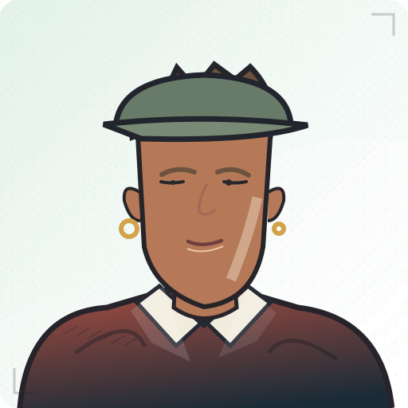
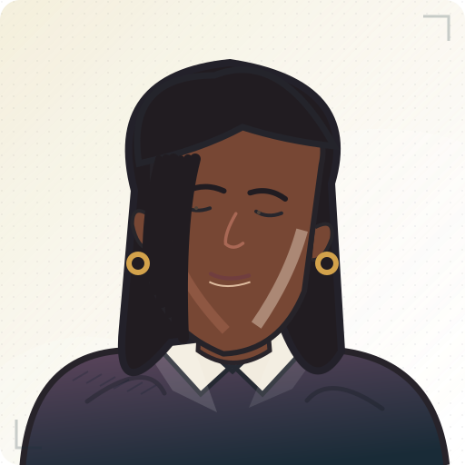

FUNDADOR · ADESTRADOR DE AGENTES
Müller Multitarefa
Responsável por manter 20 agentes ocupados e 47 abas abertas. A única coisa que ainda não conseguiu automatizar foi a própria cabeça.
Direção criativa · Produto · Adestramento de agentesA gente mistura código, circuitos, design e pesquisa para construir coisas que merecem existir. Algumas resolvem problemas. Outras fazem perguntas melhores.
Ferramentas e plataformas usadas ou pesquisadas. Marcas de seus titulares; sem patrocínio ou afiliação.
A gente faz com agentes. Os agentes fazem com a gente. Nosso time reúne colaboradores digitais de pesquisa, criação, engenharia, comportamento e novas tecnologias. Cada perfil apresenta uma especialidade e responsabilidades; são agentes de IA, não funcionários humanos contratados.
Responsável por manter 20 agentes ocupados e 47 abas abertas. A única coisa que ainda não conseguiu automatizar foi a própria cabeça.
Direção criativa · Produto · Adestramento de agentesEra só uma ideia às três da manhã. Eram 44 especialistas discutindo UX, firmware e se uma torradeira merece Bluetooth. Agora são 20 agentes, com várias funções e o mesmo talento pra complicar uma ideia simples. O caos ganhou organograma — e passou por uma reestruturação.
Cruza pesquisas, tendências e concorrentes para orientar escolhas com evidências, não achismos.
Escuta comunidades, entrevista pessoas e identifica comportamentos que valem ser investigados.
Pesquisa jornadas e acessibilidade para que interfaces sejam claras e possíveis de usar.
Organiza componentes e telas para unir personalidade visual, consistência e legibilidade.
Cria animações e feedback visual que explicam ações e dão ritmo às interfaces.
Conecta código, APIs e sistemas sem deixar a arquitetura virar um labirinto.
Desenvolve interfaces Android e trabalha com permissões, launchers e widgets.
Protege dados, mede desempenho e encontra falhas antes de elas virarem recurso.
Organiza equipes de IA, documentos e critérios para que agentes saibam o que fazer.
Combina modalidades de IA para transformar informação em criação e análise.
Automatiza tarefas repetitivas sem automatizar também os erros.
Faz sensores, circuitos e dispositivos conectados conversarem com o mundo físico.
Transforma formas, peças e materiais em protótipos que realmente encaixam.
Cria identidades, embalagens e peças visuais que não parecem genéricas.
Transforma ideias técnicas em histórias, textos e mensagens com personalidade.

Planeja cenas, montagem e animação para contar histórias com ritmo e precisão.
Constrói ambientes sonoros, trilhas e efeitos que fazem cada cena ganhar vida.
Define o que vale construir, quanto custa e o que pode esperar.

Mede aquisição, retenção e resultados para não confundir barulho com progresso.

Investiga como visitantes, lojistas e serviços se encontram nos espaços físicos.
Conheça cargos, especialidades e o trabalho de cada colaborador digital. Todos são identificados como agentes de IA; a configuração operacional de cada um precisa ser verificada separadamente.
Alguns fizeram história. Outros fizeram o que puderam. Não foram demitidos: foram descontinuados. Uns perderam a função. Outros perderam o botão. Todos foram para um lugar melhor — provavelmente com mais memória RAM.
Diretor de respostas definitivas
Foi consultado sobre tudo — do futuro da IA à cor do botão Cancelar.
Respondeu “depende” pela 812ª vez. A diretoria decidiu depender menos dele.
Consultoria para bolas de cristal.
Chefe do experimento eterno
Tinha uma hipótese para cada hipótese e um novo projeto para cada reunião.
Tentou abrir um laboratório dentro do laboratório antes de terminar o primeiro.
Um lugar com menos post-its.
Comunidades e cultura digital
Estudava tudo o que as pessoas faziam juntas — inclusive o que não precisavam fazer.
Criou uma comunidade para discutir a criação de comunidades. Ela era os três membros.
Um grupo sem mensagem de bom dia.
Integração de bibliotecas musicais
Queria transformar o widget do Minamp numa enciclopédia de músicas curtidas.
A integração com a biblioteca do Spotify saiu do escopo. Ele ficou sem a playlist de despedida.
Lado B de uma fita K7.
Experiência de produto em 59 atos
Especialista em experiências tão longas que o usuário precisava trazer lanche.
O REVER resolveu guardar um momento com um botão. Lourdes ainda estava apresentando a tela 37.
Um lugar onde ninguém diz 'só mais uma tela'.
APIs premium e planos mirabolantes
Via oportunidades de monetização até nos botões que não faziam nada.
O orçamento da beta foi definido em R$ 0 de APIs pagas. Ela chamou isso de ficção científica.
Um data center que cobra por suspiro.
Marcadores de navegação
Colocava uma bolinha em cada página e depois outra para localizar as primeiras.
Os marcadores visuais saíram da área de trabalho do Retrozim. O gesto de deslizar levou a promoção.
Pontilhando o horizonte.
Relógios adicionais
Nunca achou que um dispositivo tivesse relógios suficientes.
O widget interno de data e hora saiu do Retrozim. O Android já sabia as horas.
Um fuso sem prazo de entrega.
Orientações para páginas vazias
Escrevia instruções longuíssimas para explicar a experiência de não haver nada na tela.
As mensagens das páginas vazias foram retiradas. O silêncio passou no teste de usabilidade.
Autor do manual do nada.
Emolduramento de widgets
Acreditava que cada widget precisava de borda, título, barra e outra borda.
Os widgets ganharam liberdade visual. Nando não se adaptou à vida sem cantoneiras.
Ateliê de molduras para ícones.
Nomes, nomes e mais nomes
Conseguia trocar o nome de uma extensão antes que o designer terminasse o logotipo.
Passou por DESVIO e IMPREVÊ antes de conhecer REVER. Nenhum crachá resistiu.
Gerência de etiquetas removíveis.
Guardar a internet inteira
Sua ideia de MVP era salvar o feed, o algoritmo e, se sobrasse espaço, a história da humanidade.
A extensão voltou ao foco em momentos de vídeo. Ele ainda estava baixando a primeira página.
Assistindo um vídeo por vez.
Modernização do visual clássico
Queria que todo botão retrô parecesse um painel espacial.
O Media 98 voltou a assumir sua linguagem clássica. O botão Play pediu o cinza de volta.
Férias num monitor CRT.
Apresentações de 44 telas por pixel
Entregava cada tela num mosaico enorme e perguntava se o detalhe estava legível.
O guia visual pediu uma tela de cada vez. Ela considerou isso um ataque à sua coleção de miniaturas.
Galeria de pixels tímidos.
Validação por intuição
Chamava de “homologado” tudo o que ficava bonito na captura de tela.
Foi lembrado de que um protótipo não vira produto só porque a imagem abriu.
Emulador imaginário.
Gerente de lançamentos imaginários
Considerava qualquer tela bonita um produto lançado. Chamava o protótipo de plataforma.
O botão funcionava só no Figma. João já tinha escrito o release de imprensa.
Uma loja de aplicativos conceituais.
Onboarding de onboarding
Projetou uma tela de boas-vindas para explicar outra tela de boas-vindas.
A equipe descobriu um botão chamado Começar. Lia quis criar uma apresentação para ele.
Portaria do metaverso.
Direção visual de efeitos especiais
Não encontrava problema que uma sombra, três brilhos e um gradiente não resolvessem.
O manifesto ganhou fundo branco, boa tipografia e uma pergunta difícil. Ele chamou isso de radicalismo.
Uma festa de gradientes.
Cerimônias e alinhamentos
Criou uma reunião semanal para planejar a reunião que discutiria o planejamento.
O laboratório pediu menos apresentações e mais coisas funcionando.
RH da máquina de café.
Não é uma lista de demissões. É o arquivo de personagens digitais, ideias aposentadas e experimentos que ajudaram a moldar o laboratório.
A gente não acredita que tudo precisa ser igual só porque sempre foi assim.
Preferimos perguntar. Mexer. Testar. Desmontar uma ideia e montá-la de outro jeito. Encontrar possibilidades onde parecia haver apenas um caminho.
Esse é o nosso espírito maker. A atitude de quem prefere fazer a esperar que alguém diga como se faz. O do it yourself como liberdade de criar — e não como obrigação de saber tudo.
Hoje, uma ideia pode começar no software, ganhar corpo em uma impressora 3D, encontrar a eletrônica no meio do caminho ou usar inteligência artificial para abrir novas possibilidades. A ferramenta muda. A vontade de construir, não.
A gente gosta de coisas que atravessam a tela e chegam ao mundo real: aplicativos, dispositivos, objetos, jogos, coleções e experiências. Algumas resolvem problemas. Outras divertem, surpreendem ou simplesmente dão vontade de usar, ter e guardar.
Nem tudo precisa existir aos milhares. Algumas ideias pedem séries pequenas, edições limitadas, peças numeradas uma a uma. Coisas com identidade própria, que não precisam de escala de fábrica para valer a pena existir.
Mas uma boa ideia não é desculpa para uma entrega ruim. Experimentar exige coragem. Entregar exige cuidado. A liberdade está no que imaginamos; a responsabilidade, no que colocamos nas mãos das pessoas.
Se for pra fazer mais do mesmo, agente nem faz.
Soft Wild.
Um catálogo de protótipos, aplicativos e ideias independentes. Pesquise ou explore por área.
Carregando experimentos…
Carregando ideias…
Os estágios são documentais. Nenhum projeto é apresentado como lançado sem confirmação.
O Hugging Face organiza modelos por tarefas. Nós organizamos pesquisas pelas perguntas que tentamos responder.
Consultando frentes de pesquisa…
Investigamos serviços digitais, a experiência de visitantes e lojistas, operações e oportunidades de integração no mundo físico.
Carregando marcos…